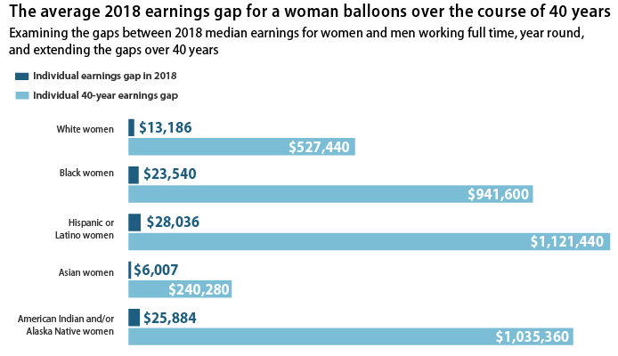

From time immemorial, society has tended to marginalise minorities. In our modern societies, this is characterised by institutional injustice, restrictions, employment segregation or difficulties in obtaining decent housing. These facts are multiple and not all of them can be mentioned.
Pierson et al. in their article presents an element that can be a barometer of social injustices towards minorities in modern society. The authors focus on the tendency of the police to stop people from minorities more often than others. By being difficult to prove, these injustices in our societies has the particularity of going unnoticed. The authors address this weakness by using data. Through their analyses, they show that the police, like our society, tend to inflict injustice on minorities solely based on their race.
Their tests are mainly based on the veil of darkness and the threshold test that will be presented later in this article.
By reading this paper and by looking through the data used in the analysis, we could not help but draw a parallel with a part of the population that suffers as much injustice as minorities. These are women.
Although their place in society is central, in 2018 in the United States, women earned on average $10194 less than men for the same job. This gap is even greater for Black and Hispanic women, who earn $2,3540 and $2,8036 less than men respectively. (source: https://www.census.gov/programs-surveys/acs/)

Given the similarities between minorities and women in terms of social justice, we felt it would be worthwhile to see whether this injustice also occurs in police arrests.
For this purpose, we divided our analysis into three parts:
- RQ1: // TODO: Add a short description
- RQ2: //Same
- RQ3: // Same
Throughout our analysis, we will illustrate facts through graphs and figures focused on specific states.